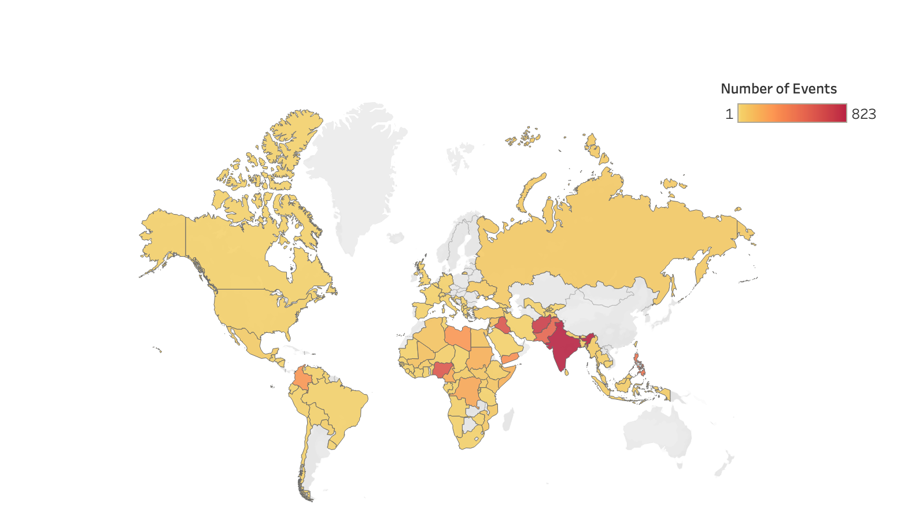

The world map shows the number of events (in this case hostage situation) across all the different countries. Furthermore,
the user has the option to interact with the map and click a country to select it. The viualization will then filter the datapoints for the selected country
and the two plots below the world map, the sunburst chart as well as the stream chart will adapt to only showing the datapoints corresponding to the selected
country.
